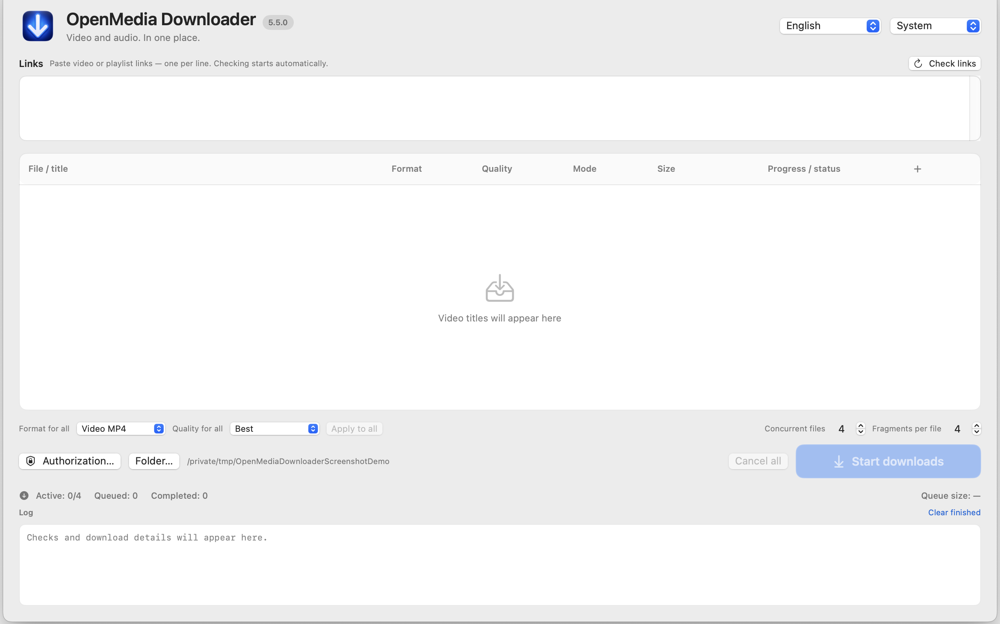

macOS 15+ · Apple Silicon
OpenMedia Downloader
Inspect supported media links and select authorized downloads or supported stream recordings.
Source only · 5.5.0Before you startSource only: redistribution clearance for bundled third-party components is pending. Save only media you are authorized to keep.
No ready-to-install package. The guide explains how to set up the source version.


How it works
- Review source
- Set up the environment
- Use permitted media
First steps
Read the documentation and release status. No ready-to-use app DMG or ZIP is offered.